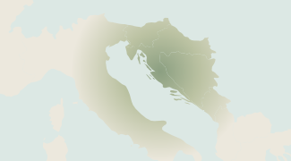

Histria
Olivenöl, Trüffel und Fuži
Entdecke fünf Genusswelten aus den Küchen Kroatiens sowie Bosnien und Herzegowinas. Sie bündeln kulinarische Traditionen. Die konkrete Herkunft findest du beim jeweiligen Produkt.

Kroatien sowie Bosnien und Herzegowina prägen die Auswahl. Die tatsächliche Lieferherkunft steht beim jeweiligen Produkt.
Herkunft entdecken →Olivenöl, Trüffel und Fuži
Feigen und Kräuter der dalmatinischen Küste
Meersalz, Oliven und Spezialitäten von den Inseln
Ajvar, Pflaumen und herzhafte Vorratsküche
Paprika, Kürbiskernöl und Vorratsküche der Ebene
Die Genusswelt zeigt dir, aus welcher Küchentradition eine Spezialität kommt. Die tatsächliche Lieferherkunft steht beim jeweiligen Produkt, sobald sie feststeht. Angaben in der Shopvorschau können Musterdaten sein.
Istrien: Olivenöl, Fuži und Trüffel.
Spezialitäten aus Istrien →Dalmatinische Küste: Feigen, Kapern und Meerfenchel. Dubrovnik und Ston entdecken.
Spezialitäten aus Dalmatien →Pag und Kvarner: Meersalz, Salbei, Kastanienhonig und Feigenkonfekt.
Bosnien und Herzegowina: eingekochte Früchte, Pflaumen und herzhafte Vorratsküche.
Slawonien und Međimurje: Paprika, würzige Vorratsküche und Kürbiskernöl.
Entdecke die typischen Leitprodukte jeder Genussbox. Ergänzende Artikel behalten stets ihre eigene Produktherkunft – unabhängig davon, in welcher Box sie enthalten sind.
Alle Spezialitäten entdecken →
Kulen, Paprika und herzhafte Vorratsküche
Geschenkbox entdecken →Passende Ergänzungen: Ajvar · Mildes Paprikapulver · Trockennudeln · Eingelegte Paprika · Scharfes Paprikapulver · Milde Paprikaflocken · Scharfe Paprikaflocken · Getrocknete Paprika
Alle Spezialitäten entdecken →
Trüffel, Fuži und mediterrane Kräuter
Geschenkbox entdecken →Alle Spezialitäten entdecken →
Olivenöl, Inćuni und Meerfenchel
Geschenkbox entdecken →Passende Ergänzungen: Tafeloliven
Alle Spezialitäten entdecken →
Kürbiskernöl und geröstete Kerne
Geschenkbox entdecken →Passende Ergänzungen: Sauerkirschkonfitüre · Kümmel · Kirschsirup · Walnussöl
Alle Spezialitäten entdecken →
Salbei, Meersalz und gereifter Käse
Geschenkbox entdecken →Alle Spezialitäten entdecken →
Kastanienhonig und Feigenbrot
Geschenkbox entdecken →Alle Spezialitäten entdecken →
Pekmez, Pflaumen und Trockenobst
Geschenkbox entdecken →Passende Ergänzungen: Beerenkonfitüre · Scharfer Ajvar · Gerösteter Ajvar
Alle Spezialitäten entdecken →
Feigen, Granatapfel und Honig
Geschenkbox entdecken →Zwischen Küste, Inseln und Hinterland werden seit Langem Zutaten und Rezepte ausgetauscht. Deshalb können Spezialitäten in mehreren Genusswelten eine Rolle spielen.
Kandierte Orangenschalen (Arancini), getrocknete Feigen und schnittfeste Quittenpaste (Kontonjata) gehören zur Süßwarentradition Dubrovniks. In Ston auf Pelješac prägt die Saline die Geschichte des Salzhandels der Republik Ragusa.
Handelswege verbinden seit Jahrtausenden die Küsten, Inseln und das Hinterland des Mittelmeers. An der östlichen Adria begegnen sich die Geschichte Roms, Venedigs und des Osmanischen Reichs sowie gemeinsame Traditionen mit Ungarn und der Habsburgermonarchie.
Dubrovnik erzählt mit kandierten Orangenschalen und getrockneten Feigen von seiner Süßwarentradition. In Ston führt die Geschichte zum Meersalz und zum Handel der Republik Ragusa.
Süßwaren aus Dubrovnik · Die Saline von Ston
 Zu den fünf Genusswelten →
Zu den fünf Genusswelten →